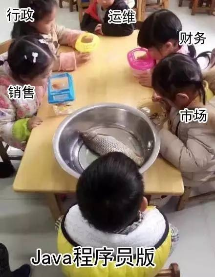
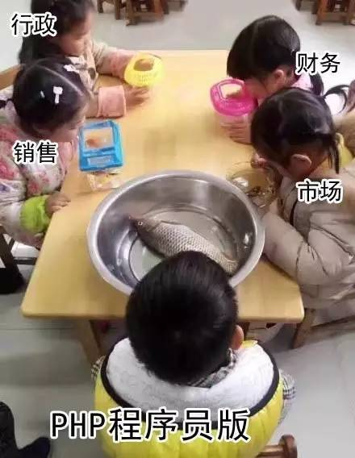
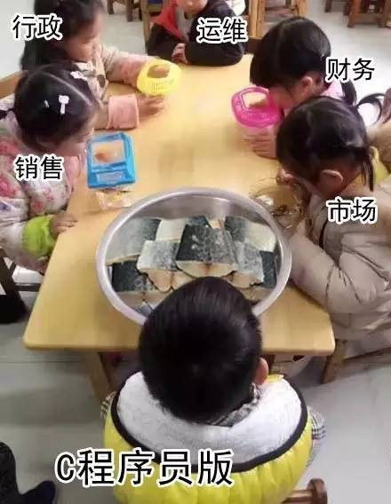
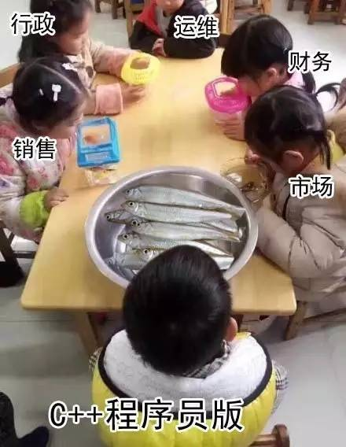
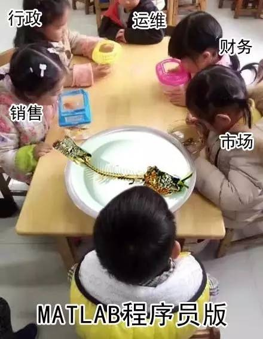

社長が明日魚を一匹持って来させて観察する…（プログラマー版）
本文は51CTO（ID：weixin51cto）からの転載で、作者は熊小妹です。
社長がメッセージを送ってきて言うには
明日、魚を一匹持ってきて観察しろ
结果
……
1、Javaプログラマー版

2、PHPプログラマー版

3、C プログラマー版

4、C++プログラマー版

5、Pythonプログラマー版
6、.NETプログラマー版△
7、Js等フロントエンドプログラマー版
8、Goプログラマー版
9、MATLABプログラマー版

<div class="tab tab-light-blue"> 購読</div>
<div class="sidebar-box">
<div class="socialicons">
<a href="../feed.html" class="rss">RSS 購読</a>
<form action="..//list.qq.com/cgi-bin/qf_compose_send" method="post">
<input type="hidden" value="qf_booked_feedback" name="t">
<input type="hidden" value="4b67b6b6c1f5e792559940cab4aebb8f1126fba880bff1a8" name="id">
<input class="placeholder" id="feed_email" name="to" value="メールアドレスを入力してノートを購読" autocomplete="off">
<input type="submit" value="購読" class="btn btn-primary">
</form>
</div>
</div>
<div class="sidebar-box cate-list">
<div class="sidebar-box recommend-here list-link">
<a href="#" style="font-size: 16px; color:#5B80A6;font-weight:bold;">ノート一覧</a>
</div>
</div>